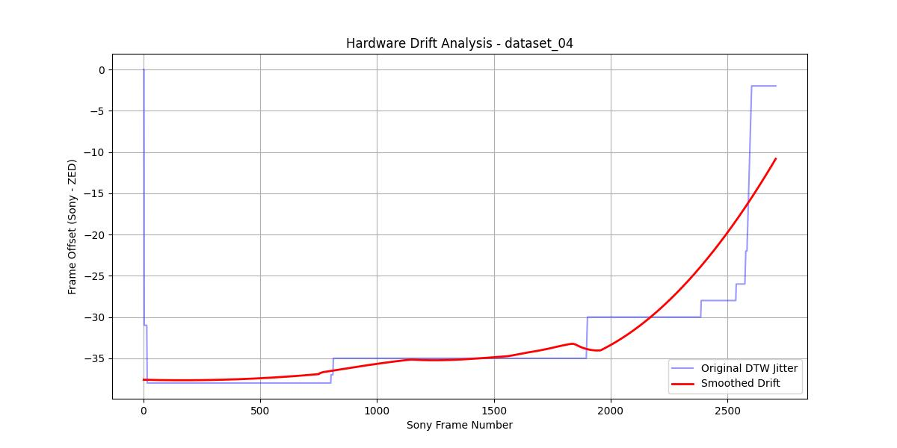
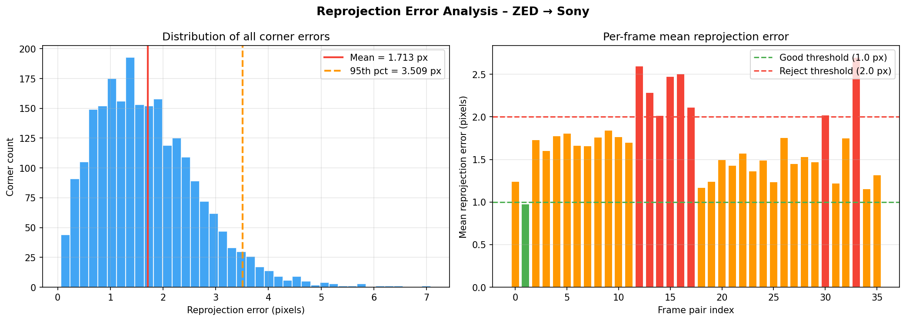
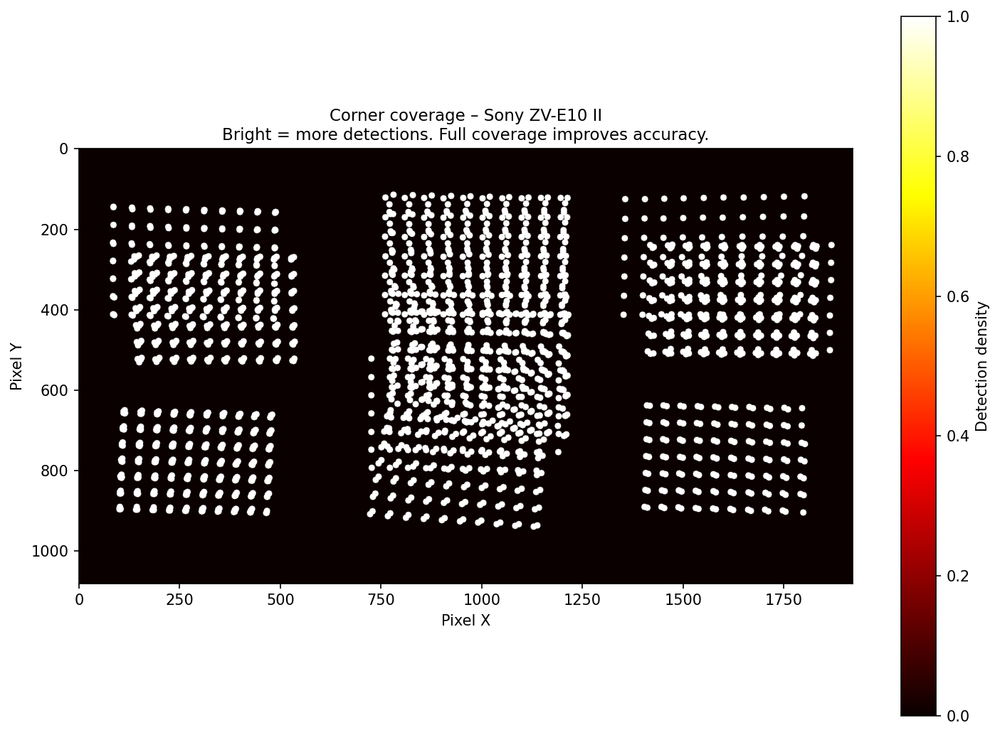
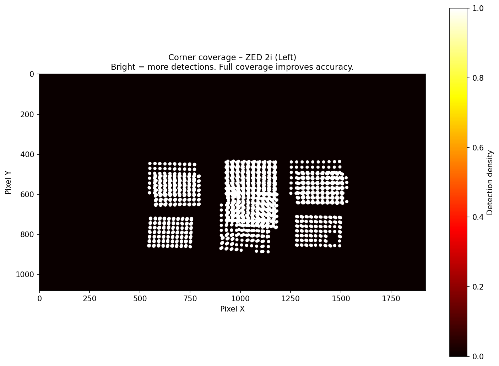
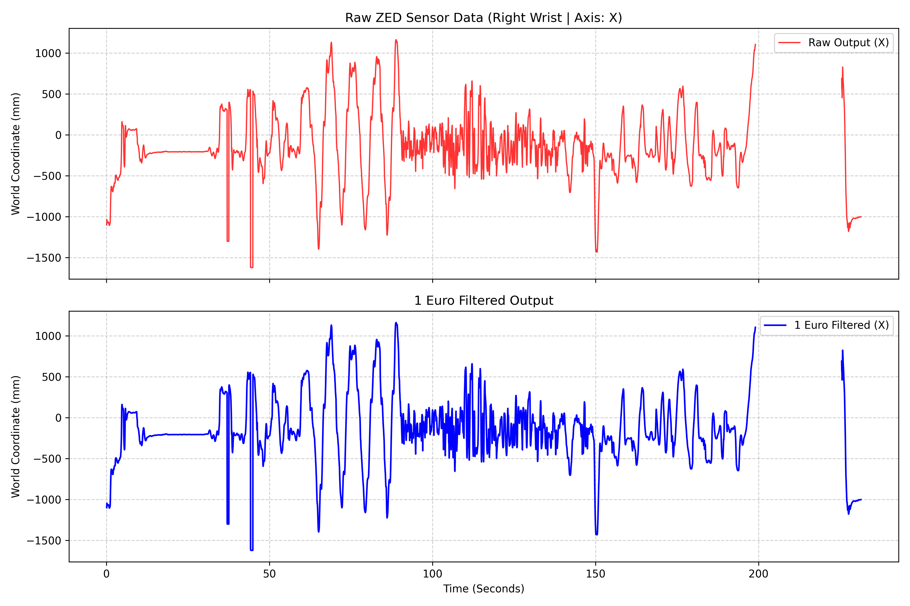
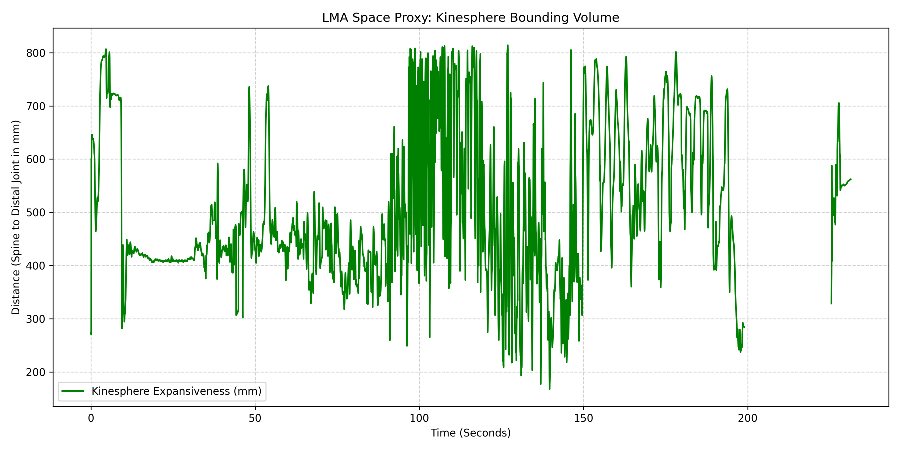

Synchronizing two cameras across time and space. Extracting and denoising a performer's 38-joint skeleton from raw depth data. Then driving a live LED volume not through position — but through the expressive quality of movement itself.
The project establishes a complete Virtual Production pipeline in which two physically co-located cameras — a Sony α mirrorless and a ZED 2i depth camera — are first synchronized in time, then calibrated in space, and finally used as the perceptual substrate for a live AR performance system. Each phase produces outputs that the next phase requires: nothing in the runtime exists without the offline pipeline.
The visible result is a live composited frame in which a performer stands in front of physics-driven CG objects that correctly occlude and are occluded by their body, while the expressive quality of their movement — not their position — continuously reshapes the virtual environment around them.
ResNet visual feature extraction and Dynamic Time Warping align two independently clocked cameras frame-by-frame. Savitzky-Golay smoothing absorbs hardware clock drift before synced frames are written.
ChArUco-board stereo calibration computes the intrinsic matrices and the extrinsic transform between the Sony and ZED optical centres. The resulting UE5 offset is applied to a CineCamera actor at startup.
ZED BODY_38 yields 38-joint 3D coordinates at 30 Hz. The 1 Euro Filter suppresses geometric sensor noise per-joint before any LMA descriptor is computed from the stream.
Four continuous LMA Effort scalars computed from the denoised skeleton drive Niagara particle systems and UE5 material WPO deformations. Movement quality — not position — modulates the virtual environment.
Phases 1 through 3 are an offline pre-production pipeline. They transform raw camera recordings into calibration data and a clean kinematic signal. Phase 4 is the real-time runtime that consumes those outputs. The two halves are decoupled — calibration runs once per recording setup; the runtime runs at every performance.
The Sony α and ZED 2i are mounted on the same rig but operate as fully independent devices: different sensors, different internal clocks, different optical centres. The alignment pipeline resolves both the temporal desynchronisation (when did they see the same moment?) and the spatial offset (exactly how far apart are their optical centres, and at what angle?).
A pre-trained ResNet extracts deep visual feature vectors from every extracted frame. Dynamic Time Warping then finds the globally optimal frame-to-frame correspondence between the two cameras by warping the feature sequences rather than relying on hardware timestamps, which carry cumulative drift. Savitzky-Golay polynomial smoothing then removes high-frequency jitter from the raw DTW mapping before synced frames are written to disk.

A ChArUco board (8×11 squares, DICT_4X4_50) is recorded by both cameras simultaneously. Corner detection, per-camera intrinsic calibration, and full stereo calibration produce the rotation and translation from ZED to Sony coordinate space. Reprojection error measures how well the calibrated model reconstructs observed corner positions. The resulting translation vector is applied directly as a UE5 CineCamera lens offset.

Heatmaps showing where corners were detected across the image plane for each camera. Broad spatial coverage — corners distributed across the full sensor area — is essential for a well-conditioned stereo calibration. Both cameras achieved strong coverage in dataset_04.


The ZED SDK's HUMAN_BODY_ACCURATE model tracks 38 joints in the
BODY_38 format at 30 Hz, outputting 3D world-space coordinates in millimetres for
every joint in every frame where the performer's root (pelvis) is confidently located.
Raw joint positions carry sensor noise — micro-jitter that would corrupt any
downstream descriptor computation. The 1 Euro Filter resolves this.

Before the descriptor system runs in real time, the Expansiveness metric is computed
offline as an analytical validation of the denoised skeleton stream. It measures the
maximum reach distance from the midspine (spine_2) to either wrist
— the most direct proxy for the performer's use of kinesphere space in Laban's sense.
Peaks correspond to large open gestures; valleys mark arms held close to the body.

spine_2 to the furthest wrist, in mm.
Computed from raw (unfiltered) positions to preserve full dynamic range.
This time-series is the foundational validation for the Expansiveness descriptor
used in the live system.
The system does not classify gesture types or respond to body position. It computes four continuous scalar descriptors from the live denoised ZED skeletal stream on every tick, each corresponding to one of Laban's four Effort factors. The eight canonical LMA Action Drives emerge as regions in the resulting four-dimensional quality space rather than being explicitly detected.
Each descriptor output passes through a calibrated sigmoid output curve that establishes a perceptual dead zone — below which incidental movement produces no AR response — and a saturation threshold above which the response plateaus. This ensures the virtual environment responds only to intentional expressive movement, not postural micro-adjustments or sensor residuals.
Weighted RMS velocity of key limb joints — wrists, elbows, shoulders, spine, head. Measures the energetic urgency of movement. The same physical position produces any Effort value depending on how the body arrived there.
Acceleration magnitude across key joints — the rate of velocity change. Independent of Effort: a body can move fast with low acceleration (quick drift) or fast with high acceleration (punch). High Weight means force is being exerted or absorbed.
Rolling standard deviation of velocity delta over a 30-frame window. High sigma — velocity is erratic, unpredictable — reads as Free. Low sigma — velocity changes predictably — reads as Bound. Serves simultaneously as the internal smoothing control variable.
Combinations of Effort, Expansiveness, and Weight produce the eight LMA Action Drives as emergent output regions in descriptor space. The most expressive work happens in transitions between archetypes, not inside any single one.
The demonstration places the performer at the centre of a three-dimensional grid of physics-simulated cubic objects in an LED volume. The grid is permanently anchored to the performer's pelvis joint — the body stays at the centre of the formation regardless of movement through the stage.
Cubes in front of the performer are occluded by the depth comparison pipeline — the body correctly appears in front of them. Cubes behind are hidden behind the body. A camera rotating around the performer continuously renegotiates these depth relationships in three dimensions.
The grid responds to movement quality, not position. An arm thrust forward with high force pushes the grid forward along the arm's direction vector. A slow open expansion spreads the grid outward. A sudden explosive movement scatters the cubes and floods the space with particles.
Recorded footage across all development stages and operational modes of the system. From the first proof-of-concept iteration using the Meta infrastructure through to the final live VP compositing and LMA-driven interactive AR layer.
The full audio-visual production document of the project. A produced piece that presents the complete system — from offline pipeline through to live AR performance — as a cohesive cinematic work.
Complete audio-visual production presenting the full pipeline: temporal alignment, spatial calibration, depth-correct compositing, and LMA-driven interactive AR in a live LED volume environment.
First iteration of the base-free adaptive tracking system, built on the Meta Quest 3 as the SLAM tracker and a Canon M50 Mark II as the production camera. Demonstrates the core tracking-to-UE pipeline, adaptive sigma-based smoothing, and the shoulder rig configuration prior to the ZED 2i migration.
Live tracking session showing the raw and smoothed camera pose output from the Meta Quest SLAM pipeline streamed into Unreal Engine 5 via the custom AdaptiveSmoothingComponent.
Footage of the Kinematic AR interactive mode in operation. The LMA descriptor system drives Niagara particle systems and WPO material deformations in real time from the live denoised ZED BODY_38 skeleton stream. Movement quality — Effort, Expansiveness, Weight, and Flow — modulates the virtual environment continuously.
Runtime capture showing the four LMA descriptors driving particle emission, attractor strength, and WPO surface deformation in response to live performer movement qualities.
Footage of the VP compositing pipeline in operation. Per-pixel depth comparison between the ZED reprojected depth map and the UE5 SceneDepth buffer produces correct real-world occlusion at every boundary. Recorded from the OWL Composure output channel as seen on the production monitor.
Live compositing output showing depth-correct occlusion with the full VP pipeline active. The performer correctly appears in front of and behind virtual elements as determined by the per-pixel depth comparison.
The project is structured as four independent repositories, each with a clearly scoped responsibility. The offline pipeline repos produce configuration outputs and validated kinematic data that the runtime repo consumes at startup.